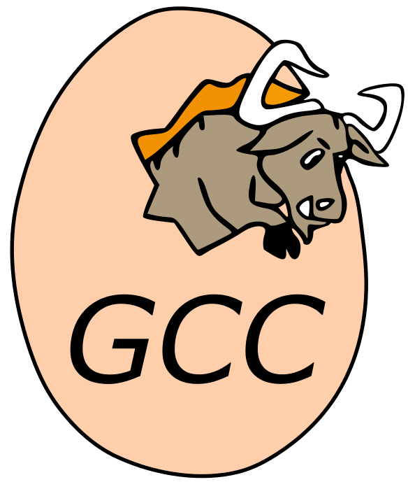
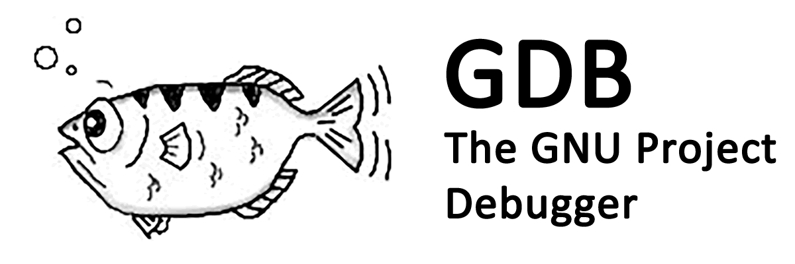
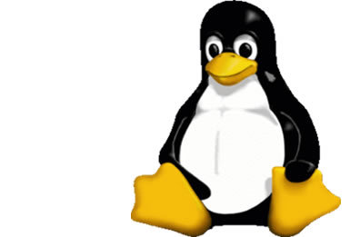

1990-1995
1990년대에 들어서면서...
인터넷의 보급과 더불어 'GNU GPL(General Public License)'로 배포된 리눅스의 보급으로 자유소프트웨어 운동
이 확산됐다.
자유 소프트웨어? :
사용자가 소프트웨어를 실행, 복사, 배포, 연구, 변경 및 개선 할 수있는 자유를 누릴 수 있음을 의미한다. 좀 더 정
확하게 말하면, 자유 소프트웨어란 프로그램의 사용자가 네 가지 필수 자유가 있음을 의미한다.
목적에 따라 자유롭게 프로그램을 실행할 수 있다.
프로그램이 어떻게 작동하는지 연구하고 필요에 맞게 자유롭게 사용할 수 있다.
복사본을 재배포하여 이웃을 도울 수있는 자유
프로그램을 개선하고 대중에게 개선 사항을 공개하여 전체 공동체가 혜택을 누릴 수있는 자유어떤 일이 있었을까?
-1990년GNU에서는 Hurd 커널의 개발을 시작했다. 개발 초기에는 BSD 4.4-Lite 커널을 기반으로 개발을 하려고 했으나, 원래의 BSD 커널을 개발했던 버클리 프로그래머들과의 협력이 이루어지지 않아 실패를 하고 말았다. GNU에서는 Hurd 커널을 사용하려고 했으나 1991년 Linux가 개발됨에 따라 Hurd 커널 대신 Linux가 자리를 잡게 되었다. 또 한, 이 이후에도 오랜 개발 기간을 거치고 있지만, 여전히 상용 단계에 접어들지 못하고 있다.
1991년 1989년에 GNU GPL v1이 출판되고, 1991년에 업데이트 된 GNU GPL v2이 출판되었다. 주요 변경 사항 : "자유 또는 죽음" 조항 도입 내용 : GPL 프로그램을 배포하는 것을 막는 조건, 예를 들어 특허로 인하여 추가적으로 돈을 지불해야 한 다거나 하는 일이 발생하여 소스 코드의 공개가 불가능하고 실행 바이너리 프로그램만 배포하려고 한다 면, 소스 코드 뿐만 아니라 실행 바이너리 프로그램조차 배포할 수 없도록 보완
GNU GCC : https://ko.wikipedia.org/wiki/GNU_%EC%BB%B4%ED%8C%8C%EC%9D%BC%EB%9F%AC_%EB%AA%A8%EC%9D%8C#/media/File:GNU_Compiler_Collection_logo.svg GNU 프로젝트의 일환으로 개발되어 널리 쓰이고 있는 컴파일러이다. 원래 C만을 지원했던 컴파일러로 이름도 'GNU C 컴파일러'이였으며, GNU 컴파일러 모음의 일부인 'GNU C 컴파일러(GNU C Compiler)'의 줄임말로 쓰이 기도 한다. 그러나 나중에 C++, 자바, 포트란, 에이다 등 여러 언어를 컴파일할 수 있게 되면서, 현재의 이름으로 바 뀌게 되었다.
GNU Debugger : https://cybertunnel.andreafiori.net/tools/details/gdb-gnu-project-debugger GDB라고 불리우는 GNU 디버거(GNU Debugger)는 GNU 소프트웨어 시스템을 위한 기본 디버거이다. GDB는 다 양한 유닉스 기반의 시스템에서 동작하는 이식성있는 디버거로, 에이다, C, C++, 포트란 등의 여러 프로그래밍 언 어를 지원한다.
-리눅스(Linux)-  그가 대학에서 교육용 유닉스인 '미닉스 (MINIX)'를 사용하고 있었는데 다른 사람이 함부로 개조하지 못하도록 제한을 두자, 그는 새로운 운영 체제를 개발하고자 했다. 점점 코드가 완성되어 가고 완전한 파일 제어가 가능해지자, 그는 이것을 포직스(POSIX)에 호환되는 운영 체제 커널로 발전시키기로 마음먹고 이를 기반으로 '리눅스(Linux)'를 개발하기 시작하였다.
리눅스(Linux)란? 다중 사용자, 다중 작업(멀티태스킹), 다중 스레드를 지원하는 네트워크 운영 체제(NOS) 이 커널은 자유로이 수정될 수 있고 매우 유용한 운영체제를 만들기 위해 FSF(자유 소프트웨어 재단 : Free Software Foundation) 산물과 다른 컴포넌트들 (특히 BSD 컴포넌트들의 일부와 MIT 의 X 윈도우 소프트웨어) 과 병합될 수 있었다.
1993-1995년 1992년에 진행했던 USL vs BSDi 소송이 법정에서 해결 되었을 때, FreeBSD와 NetBSD가 자유 소프트웨어로 배 포되었다.
Free BSD : FreeBSD는 기능, 속도 및 안정성에 중점을 둔 다양한 플랫폼 용 운영 체제이다. 버클리 대학 (University of California, Berkeley)에서 개발된 UNIX® 버전인 BSD에서 파생된 것으로, 커다란 공동체에 의해 개발되고 유지된 다 .
특징 : 현재 다른 운영체제, 심지어 가장 잘나가는 상용 운영체제에서도 여전히 빠져있는 고급 네트워킹, 성능, 보안 및 호환성 기능을 제공한다. 이상적인 인터넷 또는 인트라넷 서버를 만든다. 가중치가 가장 큰 부하에서 강력한 네트워크 서비스를 제 공하고 메모리를 효율적으로 사용하여 수천 개의 동시 사용자 프로세스에 대한 우수한 응답 시간을 유지 한다.
NetBSD :
 최신 하드웨어 뿐 아니라 구식 하드웨어, 심지어 임베디드 시스템에 이르기까지 사용할 수 있을 정도로 폭넓은 이
식성이 특징이다.
최신 하드웨어 뿐 아니라 구식 하드웨어, 심지어 임베디드 시스템에 이르기까지 사용할 수 있을 정도로 폭넓은 이
식성이 특징이다.
linux 구현체 Debian 개발 시작 Debian :
Devain release : Debian 0.01R ~ 0.90R(1993년 8월부터 12월까지) Debian 0.91R(1994년 1월) Debian 0.93R5 (1995년 3월) Debian 0.93R6 (1995년 11월) dselect가 등장했다. 이 릴리즈가 마지막 a.out 데비안 릴리즈였다 이 이후에도 개발이 계속 진행되어 3.x release까지 나왔다. 레드햇(Red Hat) 창립
 https://upload.wikimedia.org/wikipedia/sco/6/6c/RedHat.svg
레드햇(RedHat) :
일반적인 사용자가 사용하기 쉽게 리눅스 커널 중심으로 GNU프로젝트, BSD 등의 소프트웨어를 조합하
여 공급하는 형태로 리눅스 확산에 많은 공헌을 했다. 그 예로, '리눅스 배포판(레드햇 리눅스)'를 제작하
기도 하였다.(1994년)
https://upload.wikimedia.org/wikipedia/sco/6/6c/RedHat.svg
레드햇(RedHat) :
일반적인 사용자가 사용하기 쉽게 리눅스 커널 중심으로 GNU프로젝트, BSD 등의 소프트웨어를 조합하
여 공급하는 형태로 리눅스 확산에 많은 공헌을 했다. 그 예로, '리눅스 배포판(레드햇 리눅스)'를 제작하
기도 하였다.(1994년)성공 사례 : 영국 육군의 IAS(정보 응용 서비스) 분과는 전 세계에 위치한 군인 가족, 퇴역 군인, 현직 군인에게 소프트 웨어 애플리케이션, 호스팅, 웹 서비스를 제공하고 있었는데, Red Hat® 솔루션을 사용해 더 빠르고 효율적인 변경이 가능해졌다.